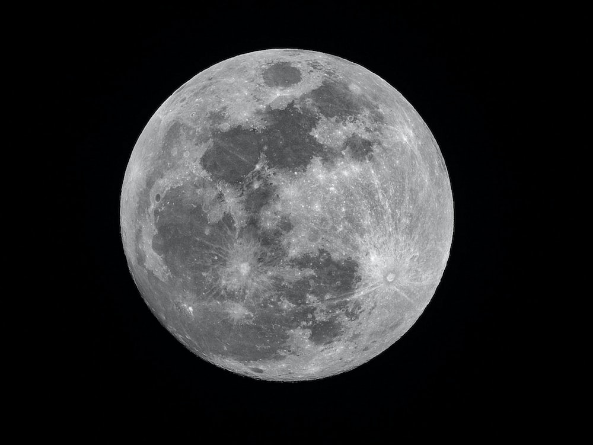

Welcome to the Moon Website!
Explore the wonders of the moon and its mysteries.
About the Moon
The moon is a celestial body that orbits around the Earth. It is Earth's only natural satellite and is one of the most recognizable objects in the night sky. The moon has fascinated humans for centuries, and its presence has played a significant role in various cultures, mythology, and scientific exploration.
The moon has a diameter of about 3,474 kilometers (2,159 miles) and an average distance of 384,400 kilometers (238,900 miles) from Earth. Its gravity is about one-sixth that of Earth, which allows astronauts to perform incredible feats, such as jumping higher and moving with greater ease.
The moon has several distinct features. Its surface is covered with craters, caused by meteor impacts over billions of years. These craters come in various sizes and shapes and provide valuable information about the history of the solar system. Additionally, the moon has mountains, valleys, and flat areas known as lunar maria, which were formed by ancient volcanic activity.
The moon goes through different phases, which result from the relative positions of the Earth, moon, and sun. The phases include the new moon, crescent moon, half moon, and full moon. These phases have been observed and documented by astronomers for centuries, providing a basis for understanding celestial motion and the concept of time.
Humans have been fascinated with the moon and have sought to explore its mysteries. The Space Age marked a significant milestone in lunar exploration, culminating in the historic Apollo missions in the late 1960s and early 1970s. The Apollo program allowed astronauts to land on the moon, conduct scientific experiments, and bring back valuable samples of moon rocks. These missions provided unprecedented insights into the moon's geology, composition, and origin.
Today, space agencies and private companies continue to study the moon. The moon remains a target for future space exploration, with plans to establish a lunar base and potentially use it as a stepping stone for further space exploration, including missions to Mars.